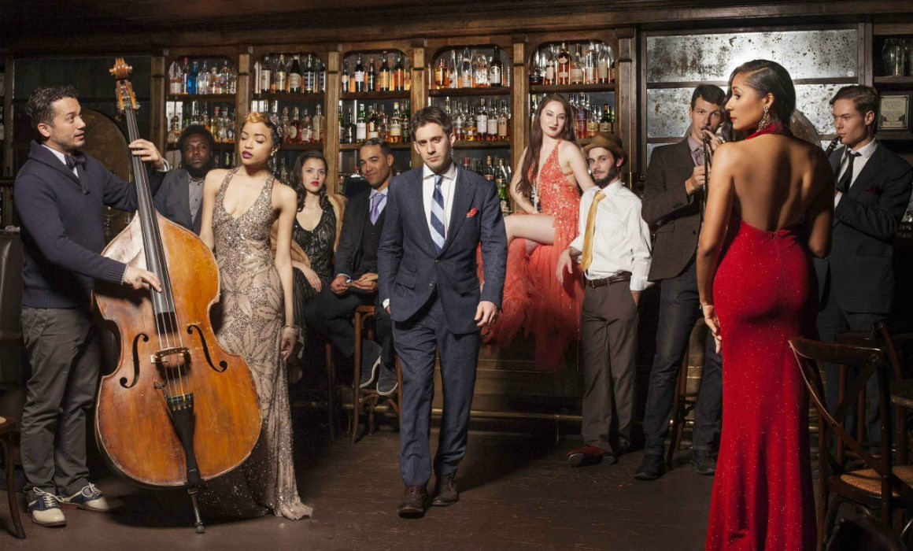

Postmodernismul este o mişcare a secolului 20 în arte, arhitectură, şi critică, care apare ca o depăşire sau o modificare a modernismului. Acesta include interpretări sceptice ale culturii, literaturii, artei, filozofiei, istoriei, economiei, arhitecturii, ficțiunii, şi criticii literare. Pe când moderniştii considerau că formele şi tendinţele tradiţionale sunt depăşite, postmoderniştii considerau necesare inspiraţiile tradiţionale sau istorice.
Muzica postmodernistă poate fi deopotrivă considerată muzică din epoca postmodernă dar şi artă care urmează tendinţele estetice și filosofice ale postmodernismului. După cum sugerează și numele, mișcarea muzicală postmodernistă e parţial apărută ca reacție la modernismul muzical şi succede din arta postmodernistă.
Muzica postmodernă are de fapt, de a face cu funcționalitatea și efectul globalizării decât are cu o propriu-zisă contradicţie.
Modernismul muzical a debutat cu dizolvarea conformismului, cu spulberarea limbajelor sale moştenite, caracteristice, printr-o deschidere faţă de sunetele vieţii moderne şi muzica acesteia. In mare parte, modernismul muzical este caracterizat de atonalitatea compozitiilor.
În muzica postmodernă, după anii 1970, a apărut un amestec al substanţei muzicii clasice cu forme populare ale muzicii de diferite genuri, precum şi cu muzica aparţinând altor tradiţii culturale.
La fel ca şi în alte arte, în muzică, transformarea postmodernă a condus la mai mult decât simpla diversificare a stilului. Ea a avut drept consecinţă atât spargerea formelor închise de muzică, cât şi depunerea unui efort susţinut pentru interpretarea semnificaţiilor. Astfel stilul muzical postmodern tinde să fie şi ironic, estompând graniţele dintre arta „clasică” şi kitsch.
Muzica modernă a fost privită în primul rând ca un mijloc de exprimare, în timp ce muzica din postmodernitate este evaluată mai mult ca un spectacol, un bun pentru consumul de masă, precum şi un indicator de identitate de grup. De exemplu, un rol important al muzicii în societatea postmodernă este de a acţiona ca o insigna prin care oamenii pot semnala identitatea lor ca membru al unei subculturi.